Appendix: Reference Architectures
This appendix presents ten reference architectures for common enterprise AI use cases. Each diagram shows the key components, data flows, and integration points that an AI Enterprise Architect needs to consider when designing these systems.
These are not prescriptive blueprints — every enterprise has unique constraints around data, security, compliance, and organizational readiness. Use these as starting points for your own architecture designs, adapting them to fit your specific context. The patterns and components shown here are drawn from the architectural concepts covered throughout this book.
1. Customer Service AI Agent
Industry: Cross-industry | Key Patterns: RAG, Agent Tools, Model Tiering, Human-in-the-Loop
This architecture powers an AI-driven customer service system that can answer questions from a knowledge base (via RAG), take actions in enterprise systems (via agent tools), and escalate to human agents when confidence is low. The model router enables cost-effective tiering — simple FAQs go to a small model while complex issues are routed to a larger one. Guardrails ensure PII filtering and content safety before responses reach the user.

Key design decisions: Where to set the confidence threshold for human escalation. How to structure the knowledge base for optimal retrieval. Which actions agents can take autonomously versus which require human approval.
2. Document Processing Pipeline
Industry: Financial Services, Legal | Key Patterns: Document AI, Classification, Extraction, Human-in-the-Loop
This pipeline ingests documents from multiple channels, classifies them by type, and extracts structured data using AI. The parallel RAG indexing branch makes processed documents searchable for downstream knowledge base applications. The human review queue catches extraction errors before they propagate to enterprise systems.

Key design decisions: Whether to use a single multi-class classifier or a cascade of binary classifiers. How to handle documents that span multiple types. When to route to human review versus auto-processing based on extraction confidence scores.
3. AI-Powered Search & Knowledge Base
Industry: Cross-industry | Key Patterns: RAG, Hybrid Search, Re-ranking, Feedback Loops
This architecture combines vector search (semantic understanding) with keyword search (exact matching) through hybrid retrieval, then applies a re-ranker to surface the most relevant results. The LLM generates a synthesized answer with citations back to source documents. User feedback flows back to improve retrieval quality over time.

Key design decisions: Chunking strategy and chunk size for the vector database. Re-ranking model selection and latency budget. How to handle access control — ensuring users only see documents they are authorized to access.
4. Fraud Detection with GenAI Explanation
Industry: Banking, Financial Services | Key Patterns: Traditional ML + GenAI, Feature Store, Human-in-the-Loop
This architecture pairs a traditional ML fraud model (optimized for speed and accuracy on structured data) with an LLM explanation engine (optimized for human-readable reasoning). The ML model makes the decision; the LLM explains it. This is a powerful pattern for any use case where fast, accurate predictions need to be accompanied by natural language explanations for human reviewers or regulators.

Key design decisions: Risk score thresholds for auto-approve, review, and auto-block tiers. How to ground the LLM explainer in past cases via RAG to produce relevant, accurate explanations. How analyst feedback flows back into model retraining.
5. Clinical Documentation — AI Scribe
Industry: Healthcare | Key Patterns: Speech-to-Text, Medical NLP, Guardrails, Human-in-the-Loop
This architecture converts patient encounters into structured clinical notes through a multi-stage pipeline: speech recognition, medical entity extraction, LLM-powered note generation, and multi-layer guardrails. The physician always reviews and approves before the note enters the EHR, maintaining clinical accountability. The audit trail is immutable and spans the entire pipeline for regulatory compliance.

Key design decisions: Which speech-to-text model to use for medical terminology accuracy. How to validate generated notes against the original transcript to catch hallucinations. HIPAA compliance architecture for data at rest and in transit.
6. Supply Chain Demand Forecasting
Industry: Retail, Manufacturing | Key Patterns: ML Ensemble, Feature Store, GenAI Insights, MLOps
This architecture uses an ensemble of ML models (each with different strengths for different demand patterns) fed by a feature store that combines historical and real-time signals. The GenAI layer adds natural language explanations of forecast anomalies for executives who need to understand why demand is shifting, not just that it is shifting. The MLOps loop ensures models are retrained when drift is detected.

Key design decisions: Which ensemble combination delivers the best forecast accuracy for your demand patterns. How fresh real-time features need to be. When to trigger automated retraining versus manual model review.
7. Code Review & Development Assistant
Industry: Technology | Key Patterns: RAG over Code, Static Analysis + LLM, Developer Feedback
This architecture augments traditional code review tools (static analysis, security scanning, linting) with an LLM reviewer that understands your codebase through RAG over repository embeddings. The LLM can identify architectural issues, suggest improvements, and assess risk — insights that rule-based tools cannot provide. Developer feedback on review quality drives continuous improvement.

Key design decisions: How to embed and index the codebase for effective retrieval. Which review aspects to delegate to the LLM versus keeping in traditional tooling. How to present AI suggestions in a way that developers trust and engage with.
8. Compliance & Regulatory Monitoring
Industry: Financial Services, Legal, Healthcare | Key Patterns: Document Ingestion, Change Detection, LLM Impact Analysis
This architecture continuously monitors regulatory sources, detects changes, and uses an LLM to assess their impact on internal policies and processes. The ongoing monitoring branch screens internal communications and transactions against compliance rules. This is an architecture where AI shifts compliance from reactive (responding to audits) to proactive (detecting issues before they become violations).

Key design decisions: How to structure the regulatory knowledge base for accurate retrieval. What confidence threshold to set for automated alerts versus human review. How to maintain an immutable audit trail that satisfies regulators.
9. Multi-Agent Research & Analysis
Industry: Consulting, Finance, Strategy | Key Patterns: Agent Orchestration, Specialized Tools, Shared Memory, Quality Review
This architecture uses an orchestrator agent to decompose a research brief into tasks for specialized agents — each with access to domain-specific tools. The shared memory allows agents to build on each other’s work. The quality review agent fact-checks and ensures consistency before human review. This pattern scales to any knowledge work that involves research, analysis, and report generation.

Key design decisions: How to decompose tasks effectively — too granular wastes tokens, too coarse loses specialization benefits. How to manage shared context without exceeding token limits. When to involve the human reviewer in the loop versus at the end.
10. AI Gateway & Model Management Platform
Industry: Cross-industry | Key Patterns: AI Gateway, Model Tiering, Guardrails, Cost Management
This is the enterprise platform architecture that underlies many of the other use cases in this appendix. The AI Gateway provides a single entry point for all AI-consuming applications, with authentication, rate limiting, PII redaction, model routing, response caching, and output guardrails as shared services. The model router directs requests to the optimal provider based on complexity, cost, and latency requirements. Platform services track costs per team, monitor model performance, and provide usage analytics.

Key design decisions: Whether to build a custom gateway or use an emerging commercial product. How to implement model routing logic — rules, classifier, or LLM-based. How to allocate AI costs back to consuming teams. Cache invalidation strategy for the semantic response cache.